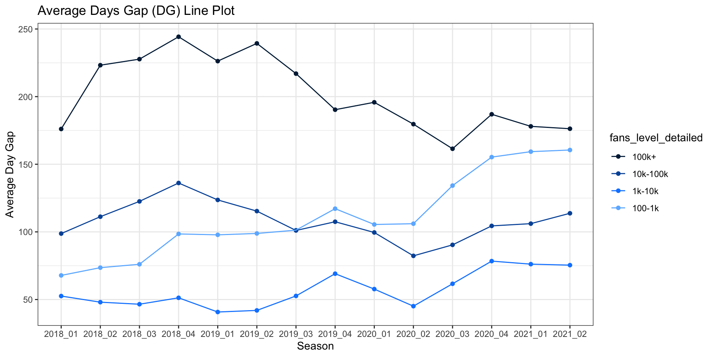
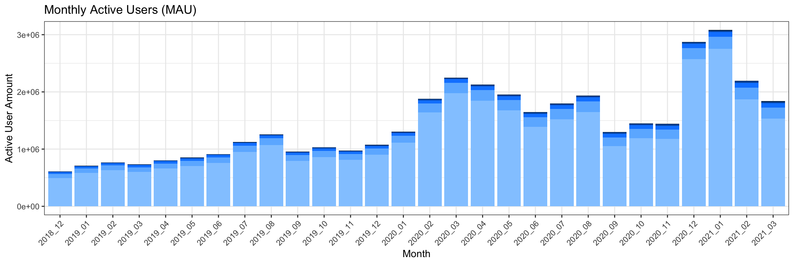
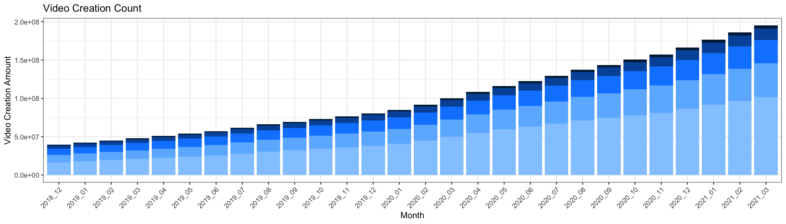

Chapter 5 Results
5.1 Analysis of Overall Status
Before conducting a detailed analysis, we will take a look at the overall status of all content creators on the platform. The general information dataset is used. Active user amount, video creation amount, and video play amount are analyzed from 2018/12 to 2021/03. Comparing these three metrics in groups divided by the number of subscriptions (fan base size level) could help us gain a more comprehensive understanding of the status quo of the content creators on the platform.
For the monthly active user amount (MAU), one can see an overall increasing trend based on the plot, while the active user amount decreases in early 2020 and reaches a peak in late 2020 and early 2021; the active user amount dropped again after reaching the peak. Moreover, there are a significant amount of content creators with relatively small fan base sizes (0-100 subscriptions). The trend is heavily influenced by the active content creators with a small fan base size. Based on our research, there was a major event on the platform at the end of 2020 to conduct fission marketing to attract new content creators, which is the potential major cause of the significant high active user amount during the period of time. Hence, if the OKR/KPI of the platform during the company quarter is solely based on active user amount (MAU), more campaigns around new content creators should be deployed more to keep more small content creators active. However, we do not believe doing so is beneficial to the platform as a whole and we need to take a deeper look at the video creation amount trend and the video play amount trend.

For the video creation count, a clear rising trend can be observed based on the plot. All fan base size levels’ content creators produce more videos over time. As the number of active users amount grows across time, the video created by content creators also increases in a more steady fashion. However, the percentage of different fan base size levels in video creation count is not proportional to the percentage inactive user amount. Based on the percentage, we know that content creators with low subscription amounts create fewer videos than content creators with a larger fan base size level monthly.
The video play amount increase over time as well, but surprisingly that the distribution of video play amount over groups of content creators is significantly different from MAU and video creation amount. Content creators with a high subscription amount (100k+) are the most prominent group that obtains the highest amount of video plays regardless of the fact that the number of content creators within the group is comparably very small. We can make an assumption that the platform does not give enough exposure to relatively new content creators with a smaller fan base size. The recommender algorithm on the platform favors more towards head users. While it is rational to design an algorithm like that to recommend popular videos to toC users (viewers), it is not beneficial to the development of toB users on the platform. Based on the three plots, it is obvious that tail toB users are not given enough exposure and enough rewards to keep them creating videos.
To further investifate the problem, we will take a deeper look at the growth path of content creators with different fan base size level.
5.2 Analysis of content creators’ growth path
The growth gap dataset is used for this part of the analysis. For each fan base size level (100~1k subscriptions, 1k~10k subscriptions, 10k~100k subscriptions, 100k+ subscriptions), the average day gap (DG) and videos creation gap (VCG) for content creators to reach the respective level is different and varies across time. To better understand if it has become harder for content creators to reach a certain level, line charts are plotted for DG and AVS.
For the VCG, the video creation gap is positively correlated with fan base size level across time. Content creators with higher subscriptions amount will need to create more videos to grow to the next level. For content creators to reach subscriptions amount of 100~1k and 1k~10k, the VCGs have a growing trend and reach peaks in the second season in 2021. For content creators to reach subscriptions amount of 100~1k and 1k~10k, the VCG increased until the end of 2018 and then decreased to and keep around 75 videos for 2 years; it experiences a significant rise in the recent year and reaches peak as well in the second season in 2021. There are no significant VCG trends for content creators with over 100k subscriptions. The potential reason for no obvious trends is that there are a limited amount of content creators with over 100+ subscriptions on the platform. The shortage of data results in limited insights of trends across time.

For the DG, the days gap is not correlated with the fan base size level as the DG for content creators to reach 100~1k subscriptions increases drastically over time compared to other levels. For content creators to reach subscriptions amount of 10k~100k and 100k+, DG increases until the end of 2018, decreases until the second season of 2020, and then increases for a year. The trend of DG for content creators to reach 1k~10k is similar except it had a more significant rise in the last two seasons of 2019. The major discovery is that it is unexpected very hard for content creators to grow from 0~100 subscriptions to 100~1k subscriptions. The hardness increases over time and it reaches a peak in the most recent season.

As higher the fan base size, the subscription amount interval becomes larger. For instance, 10k~100w has an interval of 90k and 100~1k only has an interval of 900. Therefore, one can assume that it would be harder for content creators to grow to a higher fan base level size. The VCG plot supports the assumption. However, the DG plot shows that the average day gap for content creators to grow to 100~1k subscription amount from 0~100 has reached 160 days which is only lower than the gap days to reach 100k+ from 10k~100k. While the video creation gap remains low, a high average days gap indicates that new content creators are not motivated to create videos. Once they create videos then they have a big possibility to grow their fan base size quickly because the VCG remains low over time for content creators to grow to 100~1k subscription amount interval.
Moreover, the trend of DG for content creators to grow to 100~1k has a significant increasing trend. It has become harder for new content creators to increase subscriptions on the platform compared to before. The potential cause is that: the platform has been focused on fission marketing strategies to increase user amount across time and more content creators are coming into the platform in recent years. However, the resources are limited that as the user base size grows not all new content creators would be fully supported in creating videos. Therefore, it takes them longer to increase subscription amount from the beginning as they are neither motivated to create videos nor do their videos get enough exposure in the recommending system.
In conclusion, the major problem for the growth path of content creators is that new content creators are not motivated to create videos and there are more competitions for more exposure. The conclusion supports our assumption in the first part that tail toB users are not given enough exposure and enough rewards to keep them creating videos.
5.3 Analysis of content creators’ retention
Besides the growth path, retention rate can also be used to analyze if a certain group of users are more likely to have a high churn rate. Based on the plot, one can see that the retention rate is positively correlated with the fan base size level. While a content creator has more subscriptions, he/she is more likely to stay on the platform. Moreover, the stability of the retention rate trend is also correlated with the fan base size level. The content creator groups with relatively large fan base sizes have a more stable retention rate trend, while the group with the smallest subscription amount has the least stable trend. We can conclude that the platform has not taken any actions to retain content creators in the past two years that there is no positive trend found in the plot. Particularly, content creators with 0~100 subscription amounts have the lowest and the most unstable retention rate.
